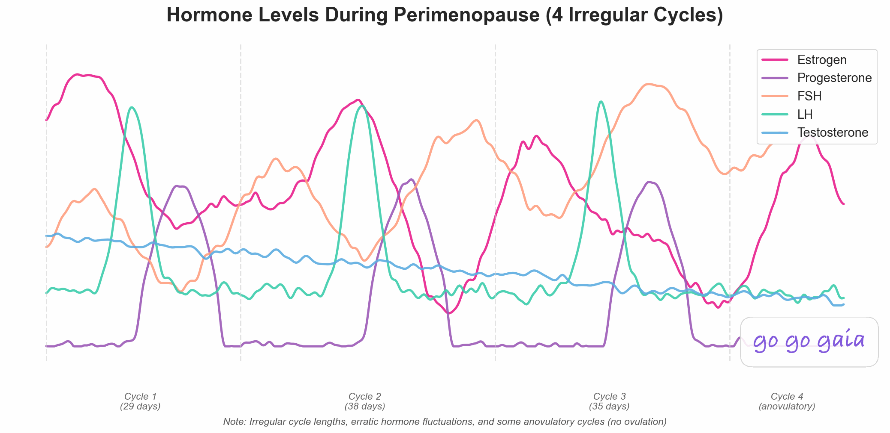

What Should You Look for in a Wearable to Track Pregnancy or Menopause?
Pregnancy and menopause change what you need from a wearable. This guide covers which devices have a dedicated mode, what each records overnight, which phones they work with, and what to check before you buy.
Full transparency: This guide is published by Holland Neurotech Inc., the company behind Veya. We've worked to describe every device fairly, and each device detail comes from the maker's own help or product pages.
Quick answer
Look for four things: a dedicated pregnancy or menopause mode, the overnight signals the device records, support for your phone, and whether your data can leave the app. Many wearables limit cycle predictions during pregnancy and menopause, so the mode matters more than the sensor.
Medical Disclaimer
This article is for educational and informational purposes only and does not constitute medical advice. Wearables can't diagnose or monitor a pregnancy or the menopause transition, and the makers say so on their own pages. Talk with your OB-GYN, midwife or another healthcare provider about any symptoms or changes, and before you act on anything a device shows you.

What should you look for in a wearable to track pregnancy?
Start with whether the device has a pregnancy mode at all. A few do, and the rest keep tracking your cycle as if nothing changed. Here's what the makers describe.
- Apple Watch and iPhone: In Cycle Tracking you can log a pregnancy to track gestational age and receive health notifications. Pregnancy can also be added as a cycle factor, which changes how the app reads your cycle.
- Oura Ring: Pregnancy Insights needs a Gen3 or later ring with an active membership and an estimated due date. It shows your gestational age and trimester, a weekly message about bodily changes, and seven-day averages of nighttime heart rate, temperature trends, heart rate variability and respiratory rate. Oura adds that after pregnancy your temperature baseline may take 60 to 90 days to normalize.
- Garmin: Pregnancy tracking in Garmin Connect shows a pregnancy snapshot next to your other health data, weekly education, daily symptom logging, blood glucose and baby movement logs, a contraction timer and a 4-week summary for checkups. A Connect IQ app puts it on compatible watches.
- Samsung Health: You can mark yourself as pregnant and enter a due date under "Situations that affect your cycle," per Samsung's US support page. Cycle tracking is available on Android only.
- Google Health with Fitbit and Pixel Watch: Google's cycle health page says you can't log pregnancy test results and recommends turning off predictions to use cycle tracking during pregnancy.
- Natural Cycles: Its FAQ page lists NC° Plan Pregnancy, NC° Follow Pregnancy and NC° Postpartum modes. It takes temperature from the NC° Band, Oura Ring, Apple Watch Series 8 or later, or Garmin.
One thing none of these pages promise is monitoring in the medical sense. If you want clinical monitoring, that's a conversation with your care team. Our pregnancy tracking guide covers what's worth logging between appointments.
What should you look for in a wearable for perimenopause or menopause?
Here the gap between a cycle feature and a menopause feature gets wider. Cycle features lean on regular periods and temperature rises. During the transition, periods can be irregular, which is why a symptom log tends to matter more than a prediction.
- Oura Ring: The perimenopause check-in combines your symptom check-ins with your Oura data. It uses the Menopause Impact Scale across seven symptom categories, shows an overall impact level, includes the cycle variability metric from Cycle Insights, and reminds you every 30 days to retake the scale. It needs a Gen3 or later ring. Oura's Cycle Insights page adds that if you're in menopause you may still see temperature trends, but without period logs it won't show predictions or phases.
- Natural Cycles: NC° Perimenopause lets you log symptoms and lifestyle factors, shows how they correlate, and produces a report for doctor visits. If you aren't using hormone therapy or hormonal birth control, temperature also feeds the algorithm. A wearable is optional, and Natural Cycles says it's not a diagnosis.
- Garmin: Garmin Connect cycle tracking says it's built for cycles that are regular, irregular or transitioning into menopause, and you can log symptoms daily either way.
- Apple Watch and iPhone: Cycle Tracking can flag irregular patterns across your last six months of logs, and Apple says people 40 and older may get a notification if their patterns suggest perimenopause or other conditions.
For Samsung and Google, the help pages we read describe cycle features but not a menopause-specific one. That may change, so check their current pages. Our perimenopause tracking app comparison and do period apps work during perimenopause post cover the app side.
Which wearable is best for following sleep and temperature changes?
If your main reason is sleep and night-time changes, compare what each device records overnight rather than its cycle features. The makers describe it like this.
- Apple Watch samples wrist temperature every five seconds while you sleep, needs about 5 nights to set a baseline, and works on Series 8 or later, Ultra models and SE 3, per its wrist temperature page.
- Compatible Fitbit and Pixel Watch devices check skin temperature every minute during sleep and need at least 3 days to set a baseline, per Google's temperature page.
- Oura measures temperature once per minute through the night, and its Pregnancy Insights include nighttime heart rate, HRV and respiratory rate averages.
We didn't find a sleep feature built specifically for menopause on these makers' help pages. What you get is the raw overnight trend, and you'll need to log hot flashes or night sweats yourself to see how they line up. Our post on period trackers that track sleep goes into that.
How do they compare side by side?
| Device | Pregnancy | Perimenopause or menopause | Overnight signals |
|---|---|---|---|
| Apple Watch | Log a pregnancy, gestational age | Irregularity notifications, perimenopause note for 40+ | Wrist temperature |
| Oura Ring | Pregnancy Insights | Perimenopause check-in | Temperature, heart rate, HRV, respiratory rate |
| Garmin | Pregnancy tracking, Connect IQ app | Cycle logging includes menopause transition | Not described on these pages |
| Galaxy Watch / Samsung Health | Mark pregnancy, due date (Android) | Not described on the page read | Skin temperature (Watch5+) |
| Fitbit / Pixel Watch | Turn predictions off, no test logging | Not described on the pages read | Skin temperature variation |
| Natural Cycles | Plan, Follow and Postpartum modes | NC° Perimenopause | From the wearable you connect |
What should your checklist look like?
- Mode: Does the device or app have a mode for your stage, or does it just pause predictions?
- Signals: Which overnight measures does it record, and does the app show them as trends over weeks?
- Phone: Does it support the phone you have? Samsung's cycle tracking is Android-only, for example.
- Subscription: Oura Gen3 and later needs an active membership for these features.
- Data: Can the data leave the maker's app, through Apple Health or an export, so you can see it next to your symptoms?
Where does Veya fit if you wear a watch or ring?
Veya isn't a wearable. It sits alongside yours and puts your logs next to your wearable's numbers. On iPhone, it reads sleep stages, heart rate variability, resting heart rate, respiratory rate and sleeping wrist temperature from Apple Health. Anything your wearable writes there can show up next to your symptoms.
For pregnancy, Veya shows your pregnancy week and trimester once you add a due date, and a pregnancy overview in the app. For perimenopause, it has a dedicated area where you can log symptoms, including hot flashes and night sweats, and see them alongside your sleep and temperature data.
Some honest limits. The wearable side runs through Apple Health, so it depends on what your device writes there. Veya doesn't replace your maker's own pregnancy or menopause features, and it doesn't diagnose or monitor anything.
Frequently Asked Questions
Can a wearable tell me how my pregnancy is going?
No. Wearables can help you log symptoms and see overnight trends, and some track gestational age from a due date you enter. They don't monitor a pregnancy in the medical sense, so questions about how it's going belong with your OB-GYN or midwife.
Will my cycle predictions keep running during pregnancy?
It depends on the device. Google recommends turning predictions off for cycle tracking during pregnancy. Apple lets you log a pregnancy, which changes how Cycle Tracking reads your data. Oura lists pregnancy as a long-term factor that can stop a cycle pattern from forming.
Are there perimenopause apps that work with Apple Watch or Fitbit?
Natural Cycles lists Apple Watch Series 8 or later and Oura as temperature sources, and Veya reads Apple Watch data that reaches Apple Health. For Fitbit data, check whether an app names Google Health or Fitbit as a source before you rely on it.
Do I need a wearable for perimenopause tracking?
No. Natural Cycles says a wearable isn't required for its perimenopause mode, and symptom logging is the main part of most of these features. A wearable adds overnight temperature and sleep trends.
Is skin or wrist temperature the same as basal body temperature?
No. Samsung says skin temperature differs from body temperature and won't match a thermometer, and Ultrahuman says skin temperature is distinct from basal body temperature. Treat the numbers as trends against your own baseline.
Sources
Every device detail above comes from the maker's own help or product pages, read in November 2026. Features and supported models change, so check the current page before you buy.
- Apple Support. Track your period with Cycle Tracking.
- Apple Support. Track your nightly wrist temperature changes with Apple Watch.
- Oura Help. Cycle Insights.
- Oura Help. Pregnancy Insights.
- Oura Help. Menopause Insights (Perimenopause Check-In).
- Google Health Help Center. Track your Cycle health with Google Health.
- Google Health Help Center. How can Google Health help me track my temperature?
- Samsung Support (US). Use Cycle Tracking in the Samsung Health app.
- Garmin Connect. Menstrual cycle tracking.
- Garmin Connect. Pregnancy tracking.
- Natural Cycles. FAQs.
- Natural Cycles. NC° Perimenopause.
Related Reading
Best Pregnancy Tracking App
Apps compared for pregnancy tracking.
Best Perimenopause Tracking App
Apps compared for the menopause transition.
Period Trackers That Track Sleep
How sleep data fits into cycle tracking.
Which Wearable Is Best for Tracking a Cycle With PCOS or Irregular Periods?
What each wearable does when cycles vary.